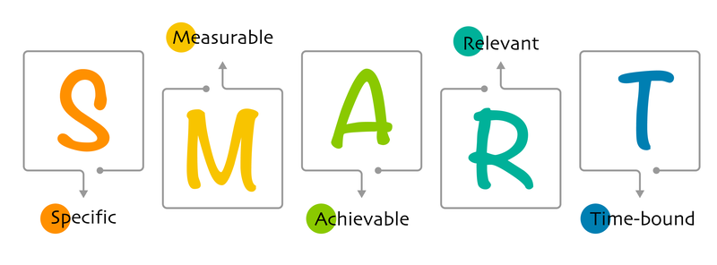

The saying often goes: “There are no dumb questions.” However, in a technical setting, questions asked often result in different answers, and at times none at all. In Eric Steven Raymond’s “How To Ask Questions The Smart Way,” he introduces the notion of “smartness” to the question asked in technical questions, as it requires expertise and experience in order to answer it. More importantly, it requires time: a limiting factor for people in general, but more so for the technical experts who have better priorities. After all, they are asking questions voluntarily. With the excessive inflow of questions on a daily basis, the “hackers” will pick and choose those “smarter” questions to not waste their time. For “smart” software engineers, asking “smart” questions is imperative to create an efficient collaborative environment for those involved.
The following question asked in Stack Overflow demonstrates a “smart” question in accordance with the principles established by Raymond in the following ways:
The subject header of the question conforms to the “object - deviation” format established. The object: “JavaScript closure inside loops,” is specific and direct in stating the thing with the problem, and the deviation” simple practical example,” provides the description of what derivation of the object the problem is about.
The content of the question is well organized and direct: beginning with the sample code in JavaScript, followed by the resulting and expected output. In addition, the asker demonstrates action and critical thinking by providing further details on where the problem originated from other scenarios.
The question was well-received and met with thorough answers from the community who provided numerous solutions, even extending collaborations between solutions posted by different users through tagging each other, some of whom build their answers upon others, which reflects the process of the user taking the time and perusing through solutions provided by others and evaluating their solutions.
On the contrary, a “dumb” question may not be well-received by the community, as shown in the following example:
The subject header does not conform to the established standard mentioned by Raymond and obfuscates the specifications regarding what the question is on. Someone, perhaps anyone, who attempts to read the subject header will still have no clue what the author is trying to ask. The author proceeds to give a brief context of his question and the fact that they ran into a problem. However, the details on how they approached their task, nor the error that resulted was mentioned’ simply that they were unable to achieve their task. The author proceeded to bluntly ask for a solution without offering any sign of due diligence on their end, of any attempts at solving the problem themselves first, but lazily and arrogantly feels entitled to be provided an answer that may have been able to be answered through some google searching, as the question was asked for an overview using the MERN stack. As a result, the question was responded to with - nothing; aside from viewership of the question and down votes of the question, reflecting the disinterest of the “hackers” to even bother with the question.
Asking questions, both from a technical and general standpoint, goes beyond just clarifications; it is a reflection of the due diligence, discipline, consideration, and willingness to collaborate with their community. Just like how answers require expertise and time put in, questions asked should abide by the same. As future software engineers, we must understand that the collaborative environment that is of technical experts is one which rely on the due diligence of individual developers to understand how to communicate effectively and efficiently; the first step is knowing how to ask smarter questions.